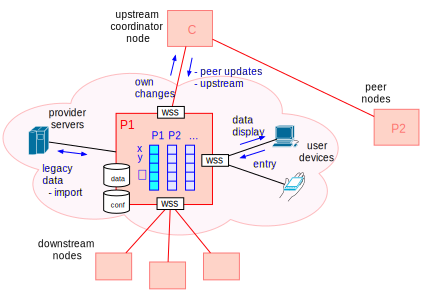
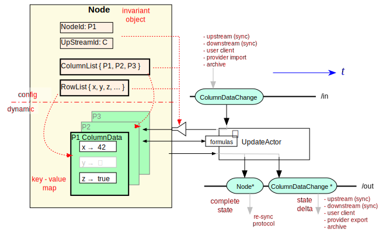

0 / 0
00:00
SHARE
System for Hierarchical Ad hoc Reporting
Peter.C.Mehlitz@nasa.gov
NASA Ames Research Center
Slides
SHARE
Slides
Problem
Key Requirements
Solution
SHARE Node
Conceptual Data Model and Flow
SHARE Data Update
Detailed Data Model
Formulas
Data Resynchronization Protocol
Detailed Data Resynchronization
Web Client
Provider Data Import / Export
Actors
TBD
Problem
task/incident related hierarchical reporting across heterogenous, isolated org entities (providers)
rapid, non-disruptive rollout/tear down
dynamic provider- and data sets
fail-operational
Key Requirements
non-intrusive
: no modification of provider machines/network, no end user installation
fail-operational
: no single point of failure causing data loss
self-repairing
: automatic data sync upon (re)connection
flexible
: provider lists and data sets can be modified at runtime without disrupting operation
uniform
: can be used across several hierarchy levels
extensible
: optional provider specific automation
Solution
ad hoc overlay using dedicated, pre-configured
SHARE nodes
inside provider networks
SHARE Node
uniform node design (same SW, different config files)
4 optional functions: user-server, node-server, node-client, provider-import/export
provider-local data display and entry through user-server (browser)
sync with upstream and downstream through node-server/node-client
upstream/downstream/user clients: JSON over websockets (allowing non-RACE/SHARE endpoints) 
Conceptual Data Model and Flow
distributed, replicated, filtered spreadsheet with typed rows (int,real,bool,string,intList,realList)
columns owned by providers (write access)
cells hold value and time
owner + date resolve conflicts (CRDT)
supports formulas (value- and time triggered)
sync through connector upstream node
SHARE Data Update
configured (semi-) static structure:
ColumnList
,
RowList
dynamic data:
ColumnData
(morphable key-value maps)
change stimulus:
ColumnDataChange
, time-triggered formulas
complete state snapshot: invariant
Node
object 
Detailed Data Model
Formulas
Data Resynchronization Protocol
based on column ownership (provider node) and ColumnData dates
dates transmitted with
NodeState
message (per-CD for ext. columns, per-cell for own)
newer own data transmitted with normal
ColumnDataChange
messages
protocol can run in cycles until fixpoint is reached, i.e. does not need to halt local op
Detailed Data Resynchronization
Web Client
Provider Data Import / Export
utilizing comprehensive RACE Import/Export actor infrastructure
this is RACEs native domain (http, JMS, Kafka, sockets, ..., XML, Json, Protobuf, binary, ...)
supports soft-realtime with > 1000 msg/sec
configured actors that communicate via publish/subscribe channels
imports processed as normal ColumnDataChange events
can be gradually introduced/extended
Actors
SHARe is generic RACE application
using actors as concurrent execution units
TBD
demo / presentation slides
NTP implementation for clock sync
runtime RowList/ColumnList swap
user auth (pw change)
more clients (Flutter)
specs (variants, Fret?)
global monitoring (Mesa?)